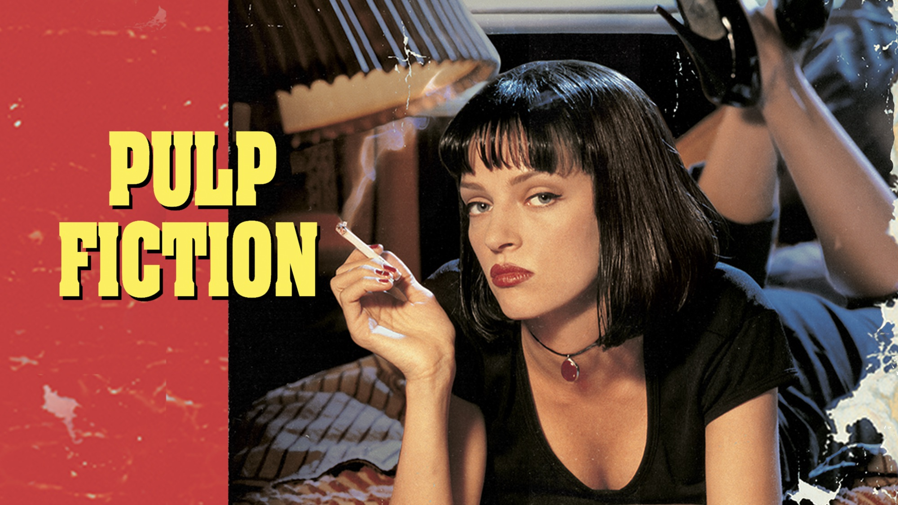

Melhores Filmes Tarantino
Filmes do Tarantino abaixo:
Pulp Fiction

SINOPSE
Vincent Vega (John Travolta) e Jules Winnfield (Samuel L. Jackson) são dois assassinos profissionais trabalham fazendo cobranças para Marsellus Wallace (Ving Rhames), um poderosos gângster.
Vega é forçado a sair com a garota do chefe, temendo passar dos limites; enquanto isso, o pugilista Butch Coolidge (Bruce Willis) se mete em apuros por ganhar luta que deveria perder.
Elenco
John Travolta - Vincent Vega
Samuel L. Jackson - Jules Winnfield
Uma Thurman - Mia Wallace
Bruce Willis - Butch Coolidge
Caes de Aluguel